Block Matching methods
The following matching costs are defined for patches centered at the pixel positions  and
and  .
.
The matching costs described below are trivially extended to color images by not making distinctions between the channels. This is equivalent to consider larger patches (three times the number of pixels) containing the pixel values from all the channels.
SSD (sum of squared differences) and SAD (sum of absolute differences)
By taking  in the following equation, we have the Sum of Absolute Differences (SAD) and the Sum of Squared Differences (SSD) respectively:
in the following equation, we have the Sum of Absolute Differences (SAD) and the Sum of Squared Differences (SSD) respectively:
But any value of  will work as well.
will work as well.
ZSSD (Zero mean SSD, or SSD-mean)
The Zero-mean SSD adds invariance with respect to additive contrast changes to the SSD. It is defined by

where
 is the precomputed average of pixel values in
is the precomputed average of pixel values in  over the block centered at
over the block centered at  .
The ZSSD cannot be implemented with integral images if expressed in this form, because the pixel value distances are dependent on the position of the pixels. Indeed,
depending on the position, a different pair of means
.
The ZSSD cannot be implemented with integral images if expressed in this form, because the pixel value distances are dependent on the position of the pixels. Indeed,
depending on the position, a different pair of means  and 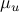 are being subtracted. However, expanding the square we get
and 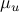 are being subtracted. However, expanding the square we get
and since  and
and  can be also precomputed by integral images, the overall cost of ZSSD is comparable to SSD.
can be also precomputed by integral images, the overall cost of ZSSD is comparable to SSD.
SSD/Norm
Normalizing the patches by their  -norms
renders the comparison robust to multiplicative contrast changes. The SSD/Norm is defined as
-norms
renders the comparison robust to multiplicative contrast changes. The SSD/Norm is defined as

where  . Expanding the above expression we get to a correlation formula
. Expanding the above expression we get to a correlation formula

where 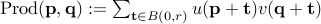, which can be computed using integral images by taking  , and the terms
, and the terms  and
and  can be precomputed.
can be precomputed.
The implementation of this cost should prevent dividing by zero. Under this circumstance, the cost should be set to  .
.
NCC (normalized cross correlation)
The Normalized Cross Correlation combines the benefits of ZSSD and SSDNorm as it is invariant to affine contrast changes. It is defined as
with

and where  is the sample variance of the block centered at .
is the sample variance of the block centered at .
 takes values in 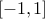, where 1 indicates the maximum correspondence. For a consistent notation across the different methods 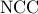 is defined as
takes values in 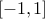, where 1 indicates the maximum correspondence. For a consistent notation across the different methods 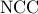 is defined as  .
The above expression can be written as
.
The above expression can be written as

which can be computed using one integral image (for  ) for each offset value (
) for each offset value ( ), and where the terms
), and where the terms  and
and  can be precomputed by integral images too!
can be precomputed by integral images too!
The implementation of this cost must prevent dividing by zero. Under that circumstance the cost should be set to 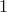.
AFF (“affine” similarity measure)
The “affine” similarity measure proposed by Delon and Desolneux (2010) is also invariant to affine contrast changes, but differently from NCC it can distinguish flat patches from those containing edges. It can be seen from the definition of that if one of the patches is flat, then the correlation will be zero independently of the content of the second patch.
In contrast, the “affine” similarity measure defined below can be non zero under the same circumstances:

where  ,
,  and
and  denotes the -norm.
It can be explicitly computed by the formula
denotes the -norm.
It can be explicitly computed by the formula

which can be implemented with integral images after pre-computing 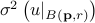 and  , which in turn can be done with two integral images, one for the square of and one for .
, which in turn can be done with two integral images, one for the square of and one for .
LIN is a simpler variant of the AFF cost that drops the invariance to additive changes, but has a similar performance

It can also be implemented with integral images by re-writing it as
![mbox{LIN}^2(mathbf p, mathbf q) := max(| U_{{mathbf p}}|^2 , | V_{{mathbf q}}|^2) left( 1- frac{left[ mbox{Prod}( {mathbf p}, {mathbf q} )right]^2}{| U_{{mathbf p}}|^2 | V_{{mathbf q}}|^2} right).](eqs/3405314062519414590-130.png)
The implementation of these costs must prevent dividing by zero. Under that circumstance, the cost should be set respectively to the maximum variance or norm of the two patches.
BTSAD and BTSSD (Birchfield & Tomasi sampling insensitive pixel dissimilarities)
By BTSAD or BTSSD, we mean an adaptation to SAD or SSD of the Birchfield and Tomasi (1998) sampling insensitive pixel dissimilarity. This matching cost, originally proposed for stereo matching, is designed to be insensitive to image sampling. For smooth (non aliased) images this cost is proven to be stable with respect to subpixel translations of the patches, while still evaluating the costs at integer positions.
This cost is particularly useful in combination with global block matching methods (Dynamic Programming for instance), where the dissimilarity is accumulated along scanlines, and where the subpixel computations are unaffordable. The insensitivity usually prevents the misclassification of some pixels as occlusions.
The usefulness of this matching cost for a ‘‘local’’ block matching method is less clear, since the minimum SAD/SSD cost may not change. Nevertheless it is worth comparing its performance with subpixel matching.
The matching costs proposed by Birchfield & Tomasi replace the definition of the pixel value distances with 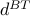. For the case of the SSD we get

where the distance is defined as a symmetrization of the distance by
and where  is
is


The four precomputed images  contain the maximum and minimum interpolated values of the image in a half pixel neighbor. For instance, with
contain the maximum and minimum interpolated values of the image in a half pixel neighbor. For instance, with  we have
we have

where the interpolated values are computed by bilinear interpolation:

Note that the maximum (and minimum) of the interpolated pixels  (resp.
(resp.  ) are only computed along the horizontal axis (definitions of 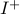 and 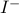). This is because the cost was originally proposed for stereo matching, so the subpixel differences are supposed to occur only along the horizontal axis. A straightforward extension of this cost for two dimensional block matching replaces the definition of (resp. ) to consider subpixel offsets also in the vertical direction
) are only computed along the horizontal axis (definitions of 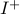 and 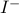). This is because the cost was originally proposed for stereo matching, so the subpixel differences are supposed to occur only along the horizontal axis. A straightforward extension of this cost for two dimensional block matching replaces the definition of (resp. ) to consider subpixel offsets also in the vertical direction
![I^{max}(mathbf q) = max left{ hat I(mathbf q+ mathbf V) right} quad mbox{with} quad mathbf V = left[-1/2,1/2right]^2,](eqs/667939860300370698-130.png)
where  denotes the bilinear interpolation of the image 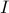. For this interpolation the maximum (resp. minimum) will occur at one of nine possible positions, therefore
denotes the bilinear interpolation of the image 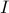. For this interpolation the maximum (resp. minimum) will occur at one of nine possible positions, therefore

Subpixel
This option permits to compute a subpixel disparity map. It is important to note that this is not a subpixel refinement step, the algorithm will consider all the subpixel disparities within the disparity range. This option is ignored when computing 2D displacement fields.
Output, Evaluation and Statistics
The output of the block matching methods always contain the following images:
disparity: Represents the computed disparity map using a grayscale coding. Next to this disparity map, another image is displayed for those stereo pairs that provide a ground truth. This second image (titled METHOD/error ) shows the differences between the computed disparity and the ground truth.
matching cost: Represents the minimum matching cost for each pixel, using a grayscale coding (black is 0).
back-projection: Is obtained by warping the secondary image using the displacement field
 computed from the first image to the second image (denoted 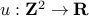 and
computed from the first image to the second image (denoted 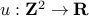 and  respectively). That is, the backprojection is
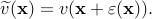Warping
respectively). That is, the backprojection is
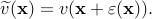Warping using the ground truth displacement field, produces an image that matches (except at the occlusions) the first image. Thus, comparing 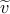 with permits to assess the quality of the displacement field. To facilitate the comparison the image back-projection/error shows the pixel-wise difference
using the ground truth displacement field, produces an image that matches (except at the occlusions) the first image. Thus, comparing 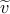 with permits to assess the quality of the displacement field. To facilitate the comparison the image back-projection/error shows the pixel-wise difference  , shown using a grayscale coding.
, shown using a grayscale coding.
first/second image: The color range of poorly contrasted images is stretched for visualization.
When the ground truth for the stereo pair is available, the errors with respect to it are computed and shown. The errors are shown as images with fixed range from -4 to 4. In this case the following images are also shown as part of the output:
ground truth: Represents the ground truth using a grayscale coding.
evaluation mask: Is an optional input image that indicates which pixels are considered (white) in the computation of the statistics (usually the boundaries are not considered). The pixels discarded by the evaluation mask are not shown in the error displays, are not considered in the statistics and are also removed from the non-occluded mask (see below).
 |
Evaluation mask example |
occlusion mask: Is a binary mask indicating which pixels are occluded (black), and therefore not considered for the computation of the statistics on Non Occluded areas. This mask is only present in the default input datasets of the demo.
 |
Occlusion mask example |
Show |Err| > 1: This binary mask indicates the points where the ground truth and the computed disparity differ more than 1 pixel
 . These pixels are superimposed on the disparity map and painted in RED.
. These pixels are superimposed on the disparity map and painted in RED.
Statistics
The statistics consider two aspects of the results: the density and the precision with respect to the ground truth disparity. The errors are computed as the absolute difference between computed disparity values and the ground truth.
Density: It is the percentage of pixels that for which the algorithm has returned a disparity. This quantity does not consider the pixels removed by the evaluation mask.
Percentage of pixels with error > 1 in the Evaluation Mask: This quantity is computed considering the pixels in the evaluation mask.
Percentage of pixels with error > 1 in Occluded areas: Considers the occluded pixels (according to the mask) that are in the evaluation mask. Since the occluded regions cannot be seen in one of the images, this quantity evaluates how well the algorithm extrapolates the disparity map.
Percentage of pixels with error > 1 in NON Occluded areas: Considers the non-occluded pixels that are in the evaluation mask. This quantity is similar to Eval. Mask but is not contaminated by the errors on occluded regions.